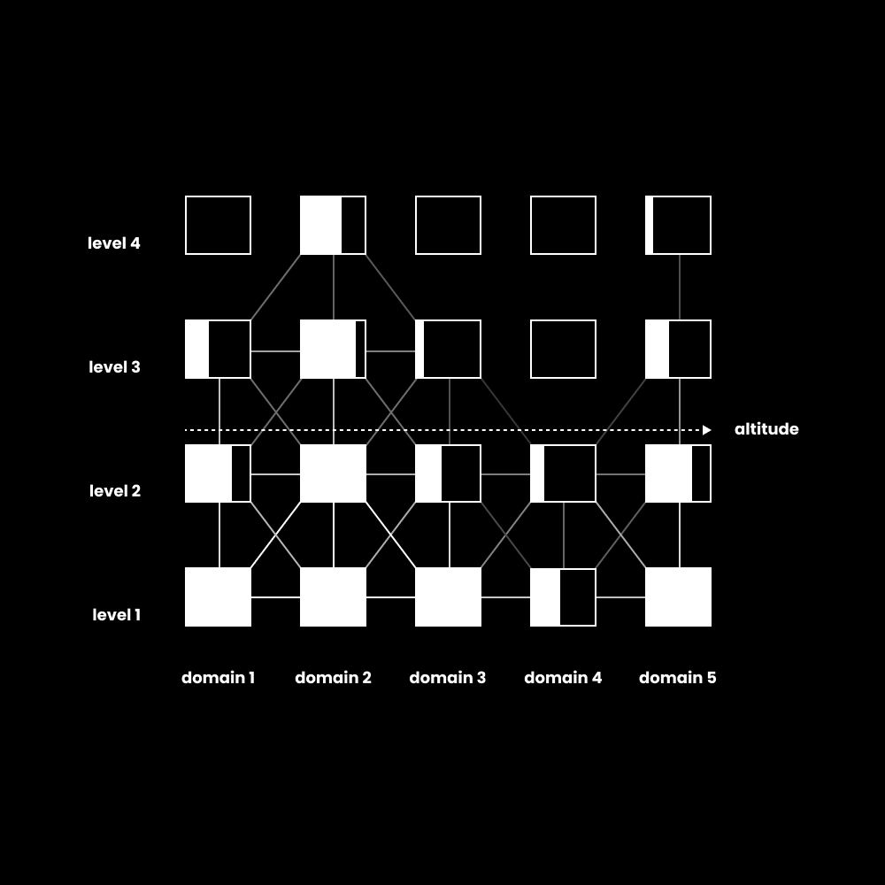
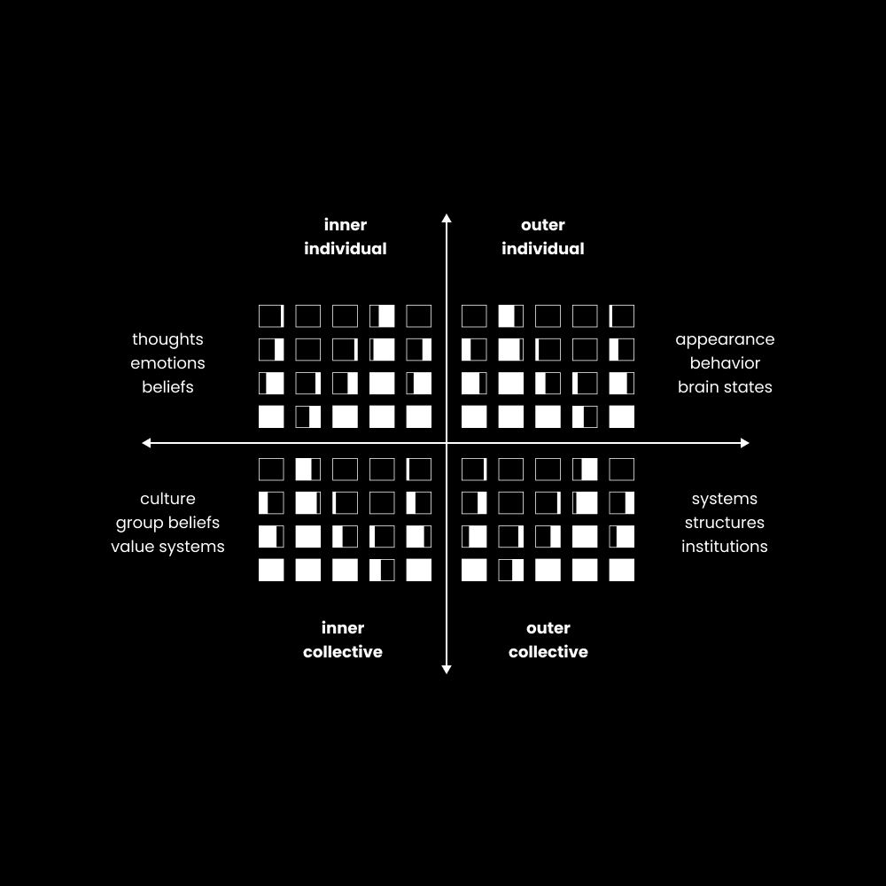

There are plenty of smart people who live in their moms basement who are one french fry away from a heart attack, and there are plenty of dumb people who are abnormally happy, healthy, and wealthy.
Rather than talking about first-principles thinking, systems thinking, meta cognition, or anything else that you can ask ChatGPT to teach you about, I want to give you something different.
我们将从一维思维开始，慢慢推进到 5D 思维。
We're going to start with one-dimensional thinking and slowly work our way towards 5d thinking.
如果你仔细读，你会体验到在一个新层次上思考是什么感觉。
If you read carefully, you will experience what it's like to think on a new level.
你这么聪明，为什么还这么穷？
If you're so smart, why are you broke?
信念（faith）远胜于信条（belief）。信条是别人替你做了思考。
——巴克敏斯特·富勒（Buckminster Fuller）
Faith is much better than belief. Belief is when someone else does the thinking.
– Buckminster Fuller
思考技巧第一条：
Thinking tip number one:
如果你想理解某样东西是什么，比如天才级的思考，那么理解它不是什么会有帮助。
If you want to understand what something is, like genius level thinking, then it helps to understand what it is not.
这样，我们就能识别并避开愚蠢的思考。
That way, we can identify and avoid stupid thinking.
当我们观察愚蠢的思考是什么样子时，会得出几点洞见：
When we observe what stupid thinking looks like, we come to a few insights:
The ability to hold threatening ideas in the realm of possibility, paired with the intention to understand rather than just know. The mark of genius thinking is illustrated by the width, depth, and height at which you can think without being cut off from venturing further, often due to holding an idea as absolute. It's your ability to traverse the full, universal web of ideas (reality, all potential knowledge) and pull them together into something coherent or useful, if not something entirely new.
那么问题是，"知道"和"理解"有什么区别？你如何培养思考的宽度、深度和高度？如果你还能走得更远呢？
The question then is, what's the difference between knowing and understanding? And how do you develop width, depth, and height of thought? What if you can take it even further than that?
Knowing is horizontal. You learn a lot and memorize facts about a specific domain until you become competent. People who know a lot are "experts," but we don't need more experts in today's world.
Understanding is vertical. It's about how sophisticated your entire cognitive operating system is. One can understand a lot while knowing very little and use that insight to take an action that leads to a more worthwhile result.
The "smart but dumb" phenomenon stems from being horizontally advanced but vertically stuck. A businessman who has all the money in the world but finds himself unhappy. A creative with beautiful work that can't make a living. A meathead that can't hold a steady relationship. They know a lot in their respective domain, but can't see outside of their bubble of knowledge, and that bubble of knowledge does not provide enough surface area to identify and solve problems that lead to suffering.
这就是为什么学会如何思考如此重要。
That's why learning how to think is so important.
因为你的心智就是你与现实互动的方式。
Because your mind is how you interact with reality.
你处理信息 → 理解它（思考）→ 做出选择 → 接收作为反馈的信息 → 回应反馈，并重复这个循环。
You process information → make sense of it (thinking) → make a choice → receive information as feedback → respond to that feedback and repeat the cycle.
那么，思考决定了你人生的结果。
Thinking, then, determines the outcome of your life.
Every passing moment where you engage in stupid thinking contributes to a compounding effect, digging you into a rut so deep you can't even access the idea that would lead you out.
思考的高度、层级和线
Altitudes, levels, and lines of thinking
你无法在制造问题的同一意识层次上解决问题。
——阿尔伯特·爱因斯坦
You can't solve a problem from the same level of consciousness that created it.
– Albert Einstein
我们从地基开始。
Let's work from the ground up.
思考的"线"（lines），是你可以知道很多的领域。
Lines of thinking are domains you can know a lot about.
These can be anything. Marketing, astrophysics, politics, social dynamics, religion, etc. When you attempt to learn domain specific knowledge, you are increasing the width of that line of thinking. It's like gaining experience in a video game.
Synthesist (Level 3) – You see your model as one among many. You hold contradictions and use perspectives as tools rather than law or some unquestionable truth.
生成型（第 4 级）——你创造出以前不存在的原创视角，或者在没有外部影响的情况下得出观念。
Generative (Level 4) – You create original perspectives that didn't exist before, or you come to ideas without outside influence.
第 1 级和第 2 级可以被看作"第一层"（first tier）思维，过于教条。我对你错。
Levels 1 and 2 can be considered "first tier" thinking, which is overly dogmatic. I'm right you're wrong.
In the domain of meaning, you are often indoctrinated into one belief system, then you question that belief system and come to your own conclusions (often rejecting the prior), then you start to see truths in all belief systems, and finally you have the ability to create a more expansive one.
In politics, much of the fighting and violence we see is do to the general population operating within levels 1 and 2. My group vs yours. Neither side can think beyond their bubble.
再说一遍，我想把这一点说得极其清楚，因为这个陷阱太容易掉进去了：
Again, and I want to make this exceedingly clear because it is such an easy trap to fall into:
天才思考，就是持续思考的能力。
Genius thinking is the ability to continue thinking.
At each level of thinking, your ability to navigate that space of both known and unknown ideas continues to expand. When you are born, you don't really think. When you are a conformist, you think until you reach a point where you have "the" answer, then you start defending that answer. When you are an individualist, you do the same thing, but with your answer. When you reach synthesist, you can think far and wide, but your ability to create new lines of thought is not fully developed yet.
Reaching your highest ability to think, and thus providing the runway for your highest potential in this life, boils down to the simple practice of noticing when your mind feels threatened, being honest with yourself, and at minimum, staying open to new perspectives.
思考的"高度"（altitude），是你所有层级的平均值。
Altitude of thinking is the average of all your levels.
高度代表跨维度的发展（高度）。
Altitude represents cross-dimensional development (height).

【配图】
为了最好地理解这一点，也为了差不多拼完思考这块拼图，把思考想象成一棵技能树会有帮助。
To best understand this, and to almost complete the thinking puzzle, it helps to visualize thinking as a skill tree.
In a video game, you can put "points" into certain traits that allow you to do more inside the game. You can take on higher challenges, have more fun, and continue playing. The same holds true with the mind.
The thing is, higher level traits can only be unlocked once you meet a specific requirement of lower level traits. You can't access "level 3" of dexterity without reaching "level 4" of strength, as an example.
In the real world, imagine you started a business. You learned everything about marketing, sales, and product. You're verifiably smart. You make a good amount of money. But then you try to take it further, and you hit an invisible road block. You can't identify what's wrong and then blame it on what you know: "the market just isn't big enough," or some permutation of that. Your mind is closed and there is no way forward.
Further, business isn't all there is to life, obviously. If the rest of your life is falling apart, you, as a business person, will try to jam a circle into a square hole. You may relieve the issue temporarily, but you never understand the root cause.
This is mostly why the domains of politics, religion, and others like nutrition are so hostile and polarizing. It's a bunch of smart but dumb people calling each other idiots because they've stopped thinking and only defend what they believe is the one right way.
Back to business, the problem is that you can't see the actual problem. It could be that you don't know how to lead a team. It could be a time management issue. It could even be a spiritual issue, but you're too business minded to even entertain that possibility. At a minimum, that perspective could birth the insight that leads to further progress. This is why generalists and polymaths win.
换句话说，你达不到生意的第 3 级，是因为你没有往其他能解锁那个层级的必要领域"加点"。
In other words, you can't reach Level 3 of business because you haven't "put points" into the other required domains that would unlock that level.
如何解锁四维思维
How to unlock 4-dimensional thinking
思考有第四个维度。
There is a fourth dimension to thinking.
嗯，它并不是像时间那样真正的第四维度，但它确实能把你的思考能力提升到四次方。
Well, it's not really a fourth dimension like time, but it does increase your ability to think by the power of four.
你看，现实有 4 个"维度"。
You see, there are 4 "dimensions" of reality.
这些维度就是视角。你可以用 4 种主要方式改变你看待一个信念、观念、情境或问题的方式。
These dimensions are perspectives. You can change how you look at a belief, idea, situation, or problem in 4 major ways.

【配图】
有内在世界和外在世界，两者又各有集体和个体的部分。
There's the inner world and the outer world, and there's collective and individual segments of both.
The inner world is mental. By that I mean psychological and cultural. Your individual inner psychology contains your thoughts, emotions, beliefs, and consciousness. The collective inner world, or culture, contains group beliefs, value systems, and ideologies.
The outer world is physical, which sounds less woo-woo, but you can't deny that you can think about the mental, which is what we're here to talk about. Your individual outer world is your visible appearance, behaviors, and physical brain states or measurements. The collective outer world is composed of systems, structures, and social institutions.
为了说明理解这一点的力量，我们来走一遍思考的进阶过程。
To illustrate the power of understanding this, let's walk through a thinking progression.
我学了很多营销知识并运用它（思考线）
I learn a lot about marketing and use that knowledge (line of thinking)
I practice, fail, and experience enough to understand that there isn't "one proven framework," but I have such an understanding that I can create outperforming marketing campaigns of my own (levels of thinking)
I pursue interests like psychology, fitness, and personal development which gives me deeper pattern recognition that further removes me from dogmatic frameworks (altitude of thinking)
从那里开始，事情变得有趣起来，而且可以朝很多不同的方向发展。
From there, things start to get interesting, and it can go in so many different ways.
One thing we forgot to mention is that thinking is usually done for the sake of solving a problem. That's what humans do. That's how we grow. That's what we find fulfillment in. And the minute you stop growing (and thus thinking), problems multiply and life becomes ever more chaotic.
所以，如果我们识别出一个问题，比如"世界正变得腐败而无意义"，我们就可以朝那个方向继续思考。
So, if we identify a problem like "the world is becoming corrupt and meaningless," we can continue our thinking in that direction.
社会如何控制注意力，并把它的观念推销给大众？（集体内在世界）
How does society control attention and market their ideas to the masses? (collective inner world)
How can your behavior change, more than it already has during this process, to have a positive impact on society? What would be the steps to reaching such a point of influence that you can leave your mark? (individual outer world)
What does the current job market look like? Is a job an actual path to achieving such a thing? What about AI? Can I utilize the technology available to me to have that impact? (collective outer world)
Am I thinking about this the right way? Or is there more? What am I missing, and how does this make me feel? Motivated? Inspired? Hateful? (individual inner world)
我们可以一直说下去，但我想你明白了。
We could go on and on, but I think you get the point.
Genius thinking is the ability to direct attention in a useful direction. You gradually encourage your mind to zoom further and further out, and from there you have a more enlightened vantage point to zoom in on the original problem you sought to solve.
如何触及第五维度
How to tap into the 5th dimension
能很好地适应一个病入膏肓的社会，并不是健康的标志。
——克里希那穆提（Krishnamurti）
It is no measure of health to be well‑adjusted to a profoundly sick society.
– Krishnamurti
是的，我知道，这其实并不是第五维度。
Yes, I know, this isn't actually the 5th dimension.
It's the fourth dimension (time), but I'm trying to practice my thinking here by making things up, and when you apply time to all four dimensions of reality we just talked about, your ability to think continues to rocket upward.
In all previous examples, we never tapped into the power of history. And if you understand history, specifically the evolutionary patterns rather than memorizing the events, you can aim your thinking in a more accurate direction.
This illustrates the difference between knowing and understanding. You can know a lot of facts about specific moments in history, and that's a great thing, but if you can't zoom out to see the essence of what that moment represents, you may fail to spot that pattern across different domains.
要开始有效地思考历史，你需要知道 5 件事。这些并不详尽，还有多得多的内容，但作为起点已经足够了。
There are 5 things you need to know to begin thinking effectively about history. These aren't exhaustive, and there is far more to it, but this is a good enough starting point.
1）总模式是"超越并包含"（Transcend and Include）
1) The master pattern is Transcend and Include
唯物主义者会说现实由原子构成，他们是对的。
A materialist would say that reality is composed of atoms, and they'd be correct.
唯心主义者会说现实由感受质（qualia）构成，他们是对的。
A mentalist would say that reality is composed of qualia, and they'd be correct.
But if we zoom out for the sake of understanding, the pattern is clear that reality is composed of whole parts (wholes that are also parts of a greater whole).
物质 → 生命 → 心智
Matter → Life → Mind
单词 → 句子 → 段落
Word → Sentence → Paragraph
机器 → 计算机 → 人工智能
Machine → Computer → Artificial Intelligence
人 → 房屋 → 城市 → 州 → 国家 → 大陆 → 行星 → 太阳系 → 星系
Human → House → City → State → Country → Continent → Planet → Solar system → Galaxy
Each is a whole that transcends and includes the one before it. Meaning, if you remove the thing that allows another thing to exist, the entire chain self-destructs (which is why environmentalists are so worried about climate change. If the biosphere collapses, humans go down with it).
举例就清楚了。
This will make sense with examples.
2）个体如何在物理上演化
2) How individuals evolve physically
这一点很简单，因为大多数人都能看到、摸到、闻到它。
This one is simple since most people can see it, touch it, smell it, etc.
原子 → 细胞 → 分子 → 器官 → 有机体（译注：原文顺序如此。）
Atoms → Cells → Molecules → Organs → Organism
你可以通过个体事物——不只是人类——如何发展来思考物理世界。
You can think about the physical world by how individual things develop, not just humans.
3）个体如何在心智上演化
3) How individuals evolve mentally
人类通过一个不断扩大的关怀圈来发展。
Humans develop through an increasing circle of care.
首先，我们关心自己和自己的生存（自我中心）。
First, we care about ourselves and our survival (egocentric).
然后，我们关心我们的部落、群体或文化（族群中心）。
Then, we care about our tribe, group, or culture (ethnocentric).
Next, we care about all groups regardless of differences (worldcentric), but since the master pattern is transcend and include, we still care about ourselves and our tribe, and that must be accounted for in our thinking. We do not sacrifice ourselves or our values simply because caring about others sounds virtuous. This is usually where the arguments between most groups happen, because some use "caring about the equality of everyone" as a moral high ground that can often be self-destructive, which is counterproductive to caring about everyone.
At the most developed levels, we care about reality as a the ultimate whole. This clearly requires one to be able to think through vast amounts of complexity to come away with anything practical.
4）社会如何在物理上演化
4) How societies evolve physically
社会结构追随技术。
Social structures follow technology.
随着能进行小规模耕作的锄头的发明，我们从部落走向村庄。
We went from tribes to villages with the invention of the hoe that enabled small scale farming.
We went from villages to empires with the invention of the horse-drawn plow (because a surplus of food allowed people to focus less on farming and more on exploring, discovering and conquering.)
随着机械化农业的发明，我们从帝国走向民族国家。
We went from empires to nation-states with the invention of machine agriculture.
现在，口袋里装着电脑，AI 就在家门口，我让你自己去想事情可能走向何方。
Now, with computers in our pockets and AI at our doorstep, I'll let you think about where things could go.
5）社会如何在心智上演化
5) How societies evolve mentally
由于个体组成集体，社会也通过类似的自我中心、族群中心和世界中心的模式演化。
Since individuals compose the collective, societies evolve through a similar pattern of egocentric, ethnocentric, and worldcentric.
The tribe can only care about itself and it's survival. Then, it can expand into a larger empire or nation-state, holding multiple sub-groups within it.
In this case, we call these worldviews pre-rational, rational, and post-rational. First we conformed to authority, then we sought progress through science (the enlightenment), then we began to realize the blind spots of both while integrating the good parts.
但你实际上要如何运用这些知识来"思考"？
But how would you actually use this knowledge to "think?"
以下是众多方法中的几种：
Here's a few ways out of many:
当你遇到一个观念、运动或冲突时，识别个体处于什么位置。进入 AI 时代，你希望谁当政治家？
Identify where individuals are when you encounter an idea, movement, or conflict. Who do you want as a politician when entering the age of AI?
When engaging in debate (political, business, personal) notice the level people are operating from. Individuals at higher levels of development often need to meet people where they are.
看看社会和组织的技术。一家仍然用工业时代的方法运营（且过于教条、无法适应）的企业，很可能会失败。
Look at the technology of societies and organizations. A business still operating on industrial era methods (and are too dogmatic to adapt) will probably fail.
最有用的应用，是找出你自己的重心在哪里。我鼓励你改天再重读这封信，同时思考你自己的发展。
The most useful application is to locate where your own center of gravity is. I would encourage you to reread this letter at another time while thinking about your own development.
我们漏掉了一件重要的事
We missed something important
愚蠢的思考，就是停止思考。
Stupid thinking is when you stop thinking.
这我们知道。
We know that.
但是什么让一个人停止思考？是什么让他们从开放转为防御，对进一步的学习和成长关上大门？
But what makes a person stop thinking? What makes them turn from open to defensive, closing themselves off to further learning and growth?
答案是身份认同。
The answer is identity.
具体来说，是紧抓住某些观念、信念或建构，并把它们变成你是谁的一部分。
Specifically, latching onto ideas, beliefs, or constructs and making them a part of who you are.
Because if you are a diehard republican or democrat, you will never be able to think outside of that bubble. Therefore, you will never be able to find the truth of the situation. That doesn't mean that you can't adopt certain values from either side, it simply means that you don't need to feel threatened when someone else disagrees with you.
认同某个特定的宗教、群体、职业或我们之前讨论过的任何东西，也是一样。
The same applies to identifying with a specific religion, group, vocation, or anything else we've discussed prior.
你还必须考虑你是如何得出这些信念的。
You must also consider how you came to those beliefs.
在当今世界，大多数人一生中从来没有哪一天为自己思考过。
Most people, in today's world, have never thought for themselves a single day in their life.
他们出生在世界的某个特定地方。
They were born into a specific part of the world.
那个地方处于某个特定的发展层级。
That part of the world was at a specific level of development.
他们被父母告知该信什么，而父母很可能从未质疑过自己的信念。
They were told what to believe by parents who probably hadn't questioned their own beliefs.
那些信念塑造了你能思考多远，而这很可能并不远。
Those beliefs shaped how far you could think, which probably wasn't very far.
记住，你的心智就是你与现实互动的方式。
And remember, your mind is how you interact with reality.
你处理信息 → 理解它（思考）→ 做出选择 → 接收作为反馈的信息 → 回应反馈，并重复这个循环。
You process information → make sense of it (thinking) → make a choice → receive information as feedback → respond to that feedback and repeat the cycle.
你能思考的空间，决定了你人生的结果。
The space in which you can think determines the outcome of your life.
If you only think within the confines set by your parents, teachers, employer, and peers on social media, the outcome of your life may not be that pretty. Just observe where the average person ends up and it's not hard to see.
所以，下次你感到受威胁时，不要向内塌缩。
So, the next time you feel threatened, do not collapse in on yourself.
和它待在一起。质疑它。意识到你的心智想要感到安全，因为它就是这样被设定的。
Sit with it. Question it. Realize that your mind wants to feel safe, because that's how it's wired.
Our brain is still wired like our hunter-gatherer ancestors, but we do not live in that world anymore, and the world will only change faster.
练习思考的人将会胜出。
Those who practice thinking will win.
——Dan
– Dan
English original (from the X article data)
Your ability to think determines the outcome of your life.
That is not an exaggeration, and learning to think has never been more important.
Especially if you consider yourself a smart person, because you are the most likely to think like an idiot.
I mean, it's all over social media. There isn't a day that goes by where you see a person with a verifiably high IQ fall into obvious traps.
There are plenty of smart people who live in their moms basement who are one french fry away from a heart attack, and there are plenty of dumb people who are abnormally happy, healthy, and wealthy.
Rather than talking about first-principles thinking, systems thinking, meta cognition, or anything else that you can ask ChatGPT to teach you about, I want to give you something different.
We're going to start with one-dimensional thinking and slowly work our way towards 5d thinking.
If you read carefully, you will experience what it's like to think on a new level.
If you're so smart, why are you broke?
Faith is much better than belief. Belief is when someone else does the thinking.
– Buckminster Fuller
Thinking tip number one:
If you want to understand what something is, like genius level thinking, then it helps to understand what it is not.
That way, we can identify and avoid stupid thinking.
When we observe what stupid thinking looks like, we come to a few insights:
• Stupid thinking is one-dimensional. People try to jam everything into their own perspective and have difficulty seeing outside of it.
• Stupid thinking is reductionistic. Experts in one domain, like business, try to reduce everything to a "strategy" problem, as an example.
• Stupid thinking is tribal. You only trust your group, party, or tribe and consider everyone else wrong because they don't conform.
• Stupid thinking does not question. Your justification is "that's just how it's done."
As a whole, stupid thinking is about closing your mind off once you've reached the limits of what you know.
Stupid thinking is to stop thinking too early. To reach a point where you react with your pre-programmed thoughts and fail to reach any novel insight.
With that, we can start to guess at a worthy definition of genius thinking, which could be:
The ability to hold threatening ideas in the realm of possibility, paired with the intention to understand rather than just know. The mark of genius thinking is illustrated by the width, depth, and height at which you can think without being cut off from venturing further, often due to holding an idea as absolute. It's your ability to traverse the full, universal web of ideas (reality, all potential knowledge) and pull them together into something coherent or useful, if not something entirely new.
The question then is, what's the difference between knowing and understanding? And how do you develop width, depth, and height of thought? What if you can take it even further than that?
Knowing is horizontal. You learn a lot and memorize facts about a specific domain until you become competent. People who know a lot are "experts," but we don't need more experts in today's world.
Understanding is vertical. It's about how sophisticated your entire cognitive operating system is. One can understand a lot while knowing very little and use that insight to take an action that leads to a more worthwhile result.
The "smart but dumb" phenomenon stems from being horizontally advanced but vertically stuck. A businessman who has all the money in the world but finds himself unhappy. A creative with beautiful work that can't make a living. A meathead that can't hold a steady relationship. They know a lot in their respective domain, but can't see outside of their bubble of knowledge, and that bubble of knowledge does not provide enough surface area to identify and solve problems that lead to suffering.
That's why learning how to think is so important.
Because your mind is how you interact with reality.
You process information → make sense of it (thinking) → make a choice → receive information as feedback → respond to that feedback and repeat the cycle.
Thinking, then, determines the outcome of your life.
Every passing moment where you engage in stupid thinking contributes to a compounding effect, digging you into a rut so deep you can't even access the idea that would lead you out.
Altitudes, levels, and lines of thinking
You can't solve a problem from the same level of consciousness that created it.
– Albert Einstein
Let's work from the ground up.
Lines of thinking are domains you can know a lot about.
Lines represent horizontal development (width).
These can be anything. Marketing, astrophysics, politics, social dynamics, religion, etc. When you attempt to learn domain specific knowledge, you are increasing the width of that line of thinking. It's like gaining experience in a video game.
(By the way, if you've studied Ken Wilber at all, you can see what I'm getting at here, just applied to thinking).
Levels of thinking are how you think about each line.
Levels represent vertical development (depth).
When we observe how cognitive development evolves in collectives and individuals over time, we can notice 5 core patterns:
• Instinctual (Level 0) – You are born act out of the need for pure survival. You react to stimuli with little thinking in between.
• Conformist (Level 1) – Black and white thinking. You follow rules and obey authority without questioning. You adopt others perspective.
• Individualist (Level 2) – Critical thinking emerges and you construct your own model. You build your own perspective.
• Synthesist (Level 3) – You see your model as one among many. You hold contradictions and use perspectives as tools rather than law or some unquestionable truth.
• Generative (Level 4) – You create original perspectives that didn't exist before, or you come to ideas without outside influence.
Levels 1 and 2 can be considered "first tier" thinking, which is overly dogmatic. I'm right you're wrong.
Levels 3 and 4 can be considered "second tier" thinking, which reject dogma and seek the ultimate truth that lies in the middle.
In the domain of meaning, you are often indoctrinated into one belief system, then you question that belief system and come to your own conclusions (often rejecting the prior), then you start to see truths in all belief systems, and finally you have the ability to create a more expansive one.
In politics, much of the fighting and violence we see is do to the general population operating within levels 1 and 2. My group vs yours. Neither side can think beyond their bubble.
Again, and I want to make this exceedingly clear because it is such an easy trap to fall into:
Genius thinking is the ability to continue thinking.
At each level of thinking, your ability to navigate that space of both known and unknown ideas continues to expand. When you are born, you don't really think. When you are a conformist, you think until you reach a point where you have "the" answer, then you start defending that answer. When you are an individualist, you do the same thing, but with your answer. When you reach synthesist, you can think far and wide, but your ability to create new lines of thought is not fully developed yet.
Reaching your highest ability to think, and thus providing the runway for your highest potential in this life, boils down to the simple practice of noticing when your mind feels threatened, being honest with yourself, and at minimum, staying open to new perspectives.
Altitude of thinking is the average of all your levels.
Altitude represents cross-dimensional development (height).
To best understand this, and to almost complete the thinking puzzle, it helps to visualize thinking as a skill tree.
In a video game, you can put "points" into certain traits that allow you to do more inside the game. You can take on higher challenges, have more fun, and continue playing. The same holds true with the mind.
The thing is, higher level traits can only be unlocked once you meet a specific requirement of lower level traits. You can't access "level 3" of dexterity without reaching "level 4" of strength, as an example.
In the real world, imagine you started a business. You learned everything about marketing, sales, and product. You're verifiably smart. You make a good amount of money. But then you try to take it further, and you hit an invisible road block. You can't identify what's wrong and then blame it on what you know: "the market just isn't big enough," or some permutation of that. Your mind is closed and there is no way forward.
Further, business isn't all there is to life, obviously. If the rest of your life is falling apart, you, as a business person, will try to jam a circle into a square hole. You may relieve the issue temporarily, but you never understand the root cause.
This is mostly why the domains of politics, religion, and others like nutrition are so hostile and polarizing. It's a bunch of smart but dumb people calling each other idiots because they've stopped thinking and only defend what they believe is the one right way.
Back to business, the problem is that you can't see the actual problem. It could be that you don't know how to lead a team. It could be a time management issue. It could even be a spiritual issue, but you're too business minded to even entertain that possibility. At a minimum, that perspective could birth the insight that leads to further progress. This is why generalists and polymaths win.
In other words, you can't reach Level 3 of business because you haven't "put points" into the other required domains that would unlock that level.
How to unlock 4-dimensional thinking
There is a fourth dimension to thinking.
Well, it's not really a fourth dimension like time, but it does increase your ability to think by the power of four.
You see, there are 4 "dimensions" of reality.
These dimensions are perspectives. You can change how you look at a belief, idea, situation, or problem in 4 major ways.
There's the inner world and the outer world, and there's collective and individual segments of both.
The inner world is mental. By that I mean psychological and cultural. Your individual inner psychology contains your thoughts, emotions, beliefs, and consciousness. The collective inner world, or culture, contains group beliefs, value systems, and ideologies.
The outer world is physical, which sounds less woo-woo, but you can't deny that you can think about the mental, which is what we're here to talk about. Your individual outer world is your visible appearance, behaviors, and physical brain states or measurements. The collective outer world is composed of systems, structures, and social institutions.
To illustrate the power of understanding this, let's walk through a thinking progression.
• I learn a lot about marketing and use that knowledge (line of thinking)
• I practice, fail, and experience enough to understand that there isn't "one proven framework," but I have such an understanding that I can create outperforming marketing campaigns of my own (levels of thinking)
• I pursue interests like psychology, fitness, and personal development which gives me deeper pattern recognition that further removes me from dogmatic frameworks (altitude of thinking)
From there, things start to get interesting, and it can go in so many different ways.
One thing we forgot to mention is that thinking is usually done for the sake of solving a problem. That's what humans do. That's how we grow. That's what we find fulfillment in. And the minute you stop growing (and thus thinking), problems multiply and life becomes ever more chaotic.
So, if we identify a problem like "the world is becoming corrupt and meaningless," we can continue our thinking in that direction.
How does society control attention and market their ideas to the masses? (collective inner world)
How can your behavior change, more than it already has during this process, to have a positive impact on society? What would be the steps to reaching such a point of influence that you can leave your mark? (individual outer world)
What does the current job market look like? Is a job an actual path to achieving such a thing? What about AI? Can I utilize the technology available to me to have that impact? (collective outer world)
Am I thinking about this the right way? Or is there more? What am I missing, and how does this make me feel? Motivated? Inspired? Hateful? (individual inner world)
We could go on and on, but I think you get the point.
Genius thinking is the ability to direct attention in a useful direction. You gradually encourage your mind to zoom further and further out, and from there you have a more enlightened vantage point to zoom in on the original problem you sought to solve.
How to tap into the 5th dimension
It is no measure of health to be well‑adjusted to a profoundly sick society.
– Krishnamurti
Yes, I know, this isn't actually the 5th dimension.
It's the fourth dimension (time), but I'm trying to practice my thinking here by making things up, and when you apply time to all four dimensions of reality we just talked about, your ability to think continues to rocket upward.
In all previous examples, we never tapped into the power of history. And if you understand history, specifically the evolutionary patterns rather than memorizing the events, you can aim your thinking in a more accurate direction.
This illustrates the difference between knowing and understanding. You can know a lot of facts about specific moments in history, and that's a great thing, but if you can't zoom out to see the essence of what that moment represents, you may fail to spot that pattern across different domains.
There are 5 things you need to know to begin thinking effectively about history. These aren't exhaustive, and there is far more to it, but this is a good enough starting point.
1) The master pattern is Transcend and Include
A materialist would say that reality is composed of atoms, and they'd be correct.
A mentalist would say that reality is composed of qualia, and they'd be correct.
But if we zoom out for the sake of understanding, the pattern is clear that reality is composed of whole parts (wholes that are also parts of a greater whole).
Matter → Life → Mind
Word → Sentence → Paragraph
Machine → Computer → Artificial Intelligence
Human → House → City → State → Country → Continent → Planet → Solar system → Galaxy
Each is a whole that transcends and includes the one before it. Meaning, if you remove the thing that allows another thing to exist, the entire chain self-destructs (which is why environmentalists are so worried about climate change. If the biosphere collapses, humans go down with it).
This will make sense with examples.
2) How individuals evolve physically
This one is simple since most people can see it, touch it, smell it, etc.
Atoms → Cells → Molecules → Organs → Organism
You can think about the physical world by how individual things develop, not just humans.
3) How individuals evolve mentally
Humans develop through an increasing circle of care.
First, we care about ourselves and our survival (egocentric).
Then, we care about our tribe, group, or culture (ethnocentric).
Next, we care about all groups regardless of differences (worldcentric), but since the master pattern is transcend and include, we still care about ourselves and our tribe, and that must be accounted for in our thinking. We do not sacrifice ourselves or our values simply because caring about others sounds virtuous. This is usually where the arguments between most groups happen, because some use "caring about the equality of everyone" as a moral high ground that can often be self-destructive, which is counterproductive to caring about everyone.
At the most developed levels, we care about reality as a the ultimate whole. This clearly requires one to be able to think through vast amounts of complexity to come away with anything practical.
4) How societies evolve physically
Social structures follow technology.
We went from tribes to villages with the invention of the hoe that enabled small scale farming.
We went from villages to empires with the invention of the horse-drawn plow (because a surplus of food allowed people to focus less on farming and more on exploring, discovering and conquering.)
We went from empires to nation-states with the invention of machine agriculture.
Now, with computers in our pockets and AI at our doorstep, I'll let you think about where things could go.
5) How societies evolve mentally
Since individuals compose the collective, societies evolve through a similar pattern of egocentric, ethnocentric, and worldcentric.
Collectives have an identity too.
The tribe can only care about itself and it's survival. Then, it can expand into a larger empire or nation-state, holding multiple sub-groups within it.
In this case, we call these worldviews pre-rational, rational, and post-rational. First we conformed to authority, then we sought progress through science (the enlightenment), then we began to realize the blind spots of both while integrating the good parts.
But how would you actually use this knowledge to "think?"
Here's a few ways out of many:
– Identify where individuals are when you encounter an idea, movement, or conflict. Who do you want as a politician when entering the age of AI?
– When engaging in debate (political, business, personal) notice the level people are operating from. Individuals at higher levels of development often need to meet people where they are.
– Look at the technology of societies and organizations. A business still operating on industrial era methods (and are too dogmatic to adapt) will probably fail.
The most useful application is to locate where your own center of gravity is. I would encourage you to reread this letter at another time while thinking about your own development.
We missed something important
Stupid thinking is when you stop thinking.
We know that.
But what makes a person stop thinking? What makes them turn from open to defensive, closing themselves off to further learning and growth?
The answer is identity.
Specifically, latching onto ideas, beliefs, or constructs and making them a part of who you are.
Because if you are a diehard republican or democrat, you will never be able to think outside of that bubble. Therefore, you will never be able to find the truth of the situation. That doesn't mean that you can't adopt certain values from either side, it simply means that you don't need to feel threatened when someone else disagrees with you.
The same applies to identifying with a specific religion, group, vocation, or anything else we've discussed prior.
You must also consider how you came to those beliefs.
Most people, in today's world, have never thought for themselves a single day in their life.
They were born into a specific part of the world.
That part of the world was at a specific level of development.
They were told what to believe by parents who probably hadn't questioned their own beliefs.
Those beliefs shaped how far you could think, which probably wasn't very far.
And remember, your mind is how you interact with reality.
You process information → make sense of it (thinking) → make a choice → receive information as feedback → respond to that feedback and repeat the cycle.
The space in which you can think determines the outcome of your life.
If you only think within the confines set by your parents, teachers, employer, and peers on social media, the outcome of your life may not be that pretty. Just observe where the average person ends up and it's not hard to see.
So, the next time you feel threatened, do not collapse in on yourself.
Sit with it. Question it. Realize that your mind wants to feel safe, because that's how it's wired.
Our brain is still wired like our hunter-gatherer ancestors, but we do not live in that world anymore, and the world will only change faster.